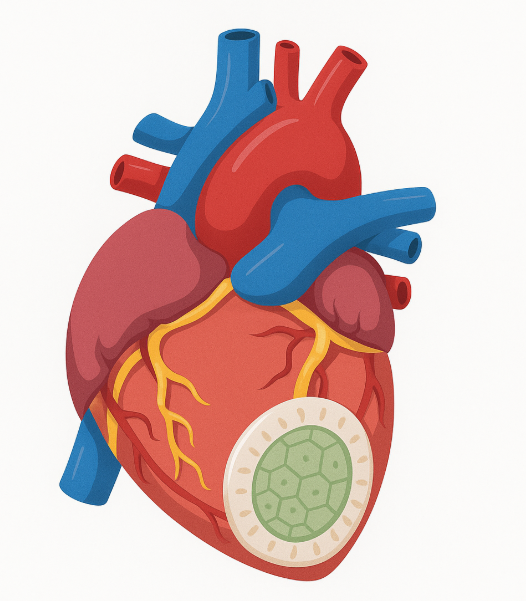

imagine this:
you’ve just survived a heart attack. you’re told to “rest,” but your heart skips, stalls, and you’re scared. you’re 50, and already being fitted for a defibrillator. no one mentions recovery. just risk. meanwhile, the technology exists — but not for you.
1 in 4 cardiac patients experience a second major event within 5 years. cardiac patches exist, but they’re often one-size-fits-all — failing to match the rhythm of your actual heart.
the problem: engineered patches fail to integrate electrically
- placement is imprecise, based on guesswork
- electrical mismatch leads to arrhythmias
- post-MI hearts vary widely — but patches don’t
the patch:

how do we build it?
behind the scenes:
This project combines regenerative engineering, AI, and material science. It was modeled in Blender and visualized using Sketchfab, with supporting research from recent publications in cardiac bioengineering.
references:
refs.